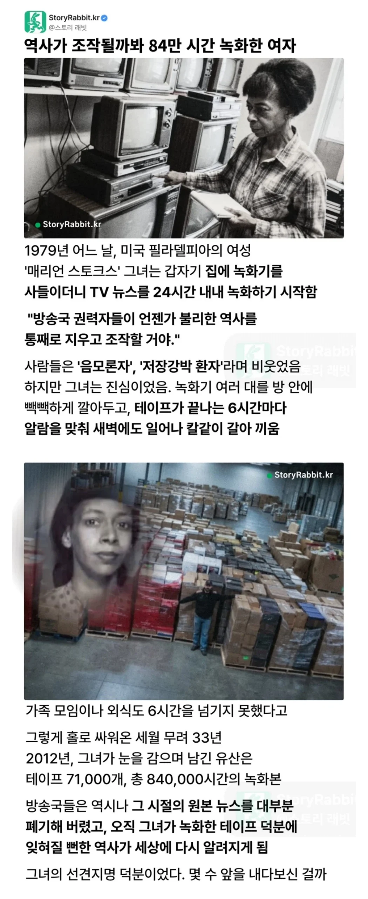

녹음이랑 녹화 기능 있는 책이 있어요?
세종대왕이 한글만들었다는 녹음이랑 녹화본 있어서 알고있는거임?
아 글을 ㅈ도 이해를 못하셨군요!
아 또 무슨말이야 ㅅㅂ 이런 사고장애적인 글 보면 짜증난다고
선생님은 책으로 기록을 남겨도 그걸 이해할 지능이 아니신것 같습니다.
문서로 남긴 기록은 사실인지 구라인지 그냥 정황증거를 보며 저자를 믿는 수 밖에 없지만
영상은 조작된거 아닌거 검증만 하면 있는 그대로의 사실임 ㅇㅇ
진짜 한숨만나오는녀석이네 ㅋㅋ
씻발 본문은 좀 보고 댓글 써요!

혹시 장애신가요?
이젠 걍 닉만봐도
아~ 이건 책잡힐 소리네요!
우리랑 같은 게시물 본게 맞아?
너는 우리가 알고 있는 역사가 100% 진실이라고 믿는 거임? 다 책에 나와 있던 내용인데
쟤 닉 잘 기억해두셈 걍 분탕새끼임
혹시 중학교 들어가며 사회를 배우지 않았나요…? 아직도 기억하는 것중 하나가 기록되어진 역사는 대부분 승자의 역사이기에 어쩔때는 편협할 수 있다 라고 선생님이 말해준게 기억이 나는데. 글로 쓰여진 책은 편집이 되어서 편집한사람의 의도대로 다시 쓰여질 수 있습니다.
심각하네ㅋㅋ비추 몇개임?
극한의 로스트미디어 갤러 , 나무위키 사관...
아카이브가 권력이 되는거지 뭐
로미갤 갤주냐고
뉴스가 조작되어 방송되는 경우는 생각하지 않았나보네
뉴스가 조작된다 한들 뉴스를 했다는 사실은 변하지않음
즉 정말로 조작되었으면 조작의 흔적이 남는다
예전에CIA 관련자가 헀다던 이야기가 생각나네. 어떠한 일이 발생했다면 어떤방식으로든 그런 일이 있었다는 증거가 남기 마련이라고. 어떻게 보면 조작된 뉴스도 다른 자료와 조합하면 그 일이 있었다는 간접적인 정황증거가 될 수 있으니까.
그냥 진단받지 않았을 뿐인 조현병 아닐까? 조현병 환자들 망상이 죄다 저런 느낌이던데 감시, 음모, 조작 이런거
고장난시계도 하루 두번은 맞는다잖아 그 강박증이 의외로 도움된 형태로 나타난거지
우리나라도 저런 사람 한명 있었으면 90년대 이전 방송 남아있었을텐데 ㄲㅂ
돈많은 조현병 ㅋㅋ
저 시절부터 시작해서 24시 풀로 33년간 녹화 했으면 돈도 진짜 많이 들었겠네
로스트미디어갤 초대 갤주님...
어떤 뉴스를 녹화하셨는지 궁금하네
배경이 싹 생략됐네
정신병 걸려서 저런게 아니라 이란이 무슬림 혁명했을때
팔레비 왕조 사람들 미국으로 망명 받아줬다고 미국 대사관 사람들을 1년 넘게 인질 잡음
이 사람은 좌파 인권운동가라서 미국 언론들이 순수 이란탓으로 왜곡하는걸 남겨두려고 녹화 시작
미국 언론들이 제정신 아닌건 맞아서 이 인질 사태를 트루먼쇼마냥 소비했다고 함
미국-이란 아직도 사이 안좋은게 결국 친미 왕조 엎어진 일 때문이고
페르시아 문닫고 이란이 뭐 살기좋은 나라라도 됐으면 선경지명이라 했겠지만
이란은 경제,문화 양면에서 퇴보하고 테러단체들 지원이나 하는 중동의 암덩어리행
게다가 애플 초기투자자라는데 ㅋㅋ
책이라는 저장수단이 있어요